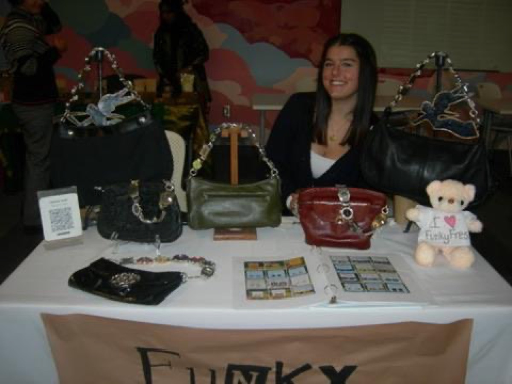

The Funky Freshe story
One pair of earrings and a couple of curious kids at the pool. Here's how a poolside idea grew into a table full of handmade things, one market at a time.
The idea
The kids Samantha lifeguarded over the summer kept noticing her "funky" and "fresh" earrings. The nickname stuck, and so did the idea.

Etsy opens
Funky Freshe went online. The first handmade pairs shipped out to strangers across the country, one little kraft card at a time.

First time at the Cincinnati City Flea
A folding tent, a table of earrings, and a whole lot of nerves. The first in-person booth at Cincinnati's beloved City Flea.

Second summer of the City Flea
Back for round two, now a regular fixture under the Music Hall sky. The booth got bigger and the regulars started showing up.
Third summer + printed sheets
A third summer at the Flea, and a new trick: printed shrink-film designs (hello, Eras Tour) that let the collection get a little louder.

Closing the Etsy shop
College moved Samantha to Cornell, and keeping up with online orders from a dorm room wasn't realistic. The Etsy shop closed, but the brand didn't slow down.
Back at the Flea + watch purses
Still vending all summer at the City Flea, and debuting something new: watch purses, crossbody straps built from vintage watch faces.

Cornell Creators Market
Funky Freshe went to college too, joining the Cornell Creators Market for the very first time.

First banner sale
The first proper banner sale. A bigger setup, a bigger crowd, and the brand's name up in lights (well, on a banner).

Cornell Creators Market, again
Back at the Creators Market with a sharper booth and a full table of new designs.
A home of its own
Five years in, Funky Freshe gets a website — and a shop where you can buy the purses directly. You're looking at it.